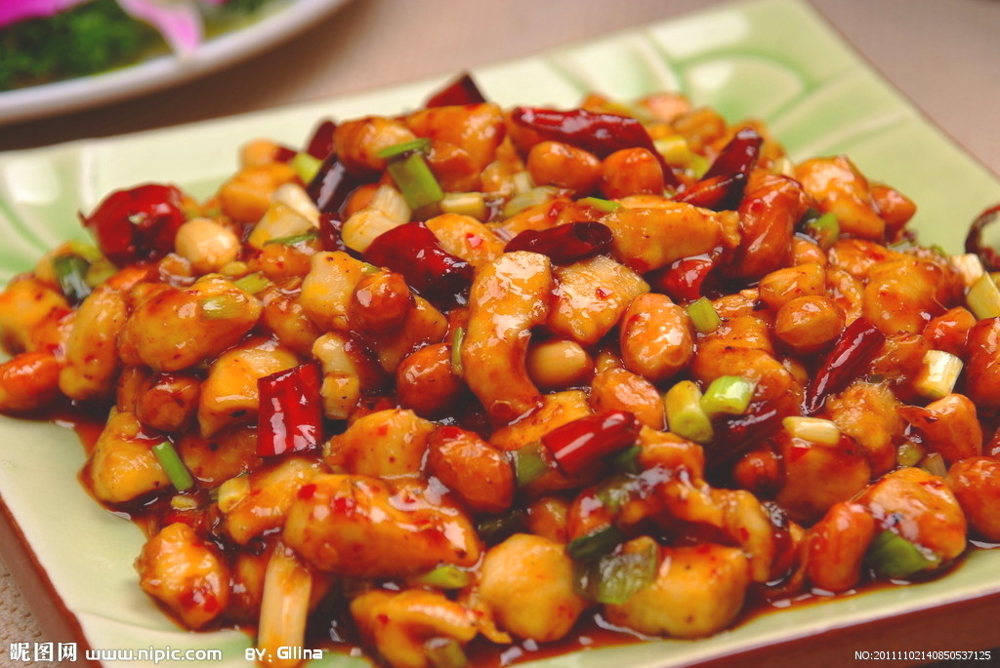

宫保鸡丁是汉族传统经典名菜，属于川菜中最具代表性的菜品之一。创始人为贵州织金人时任四川总督丁宝桢，在任四川总督时创制该菜，流传至今。由于一般认为宫保鸡丁正式创制是丁宝桢任四川总督之时，在蜀地创制并流传开，且其后至今的漫长岁月中，宫保鸡丁主要通过市场巨大的川菜馆作为载体走向大江南北及海外，声名远播，因此宫保鸡丁在菜系定位属于川菜系，同时由于丁宝桢为贵州人，所以宫保鸡丁也可被认为是贵州菜系即黔菜系。
start cooking